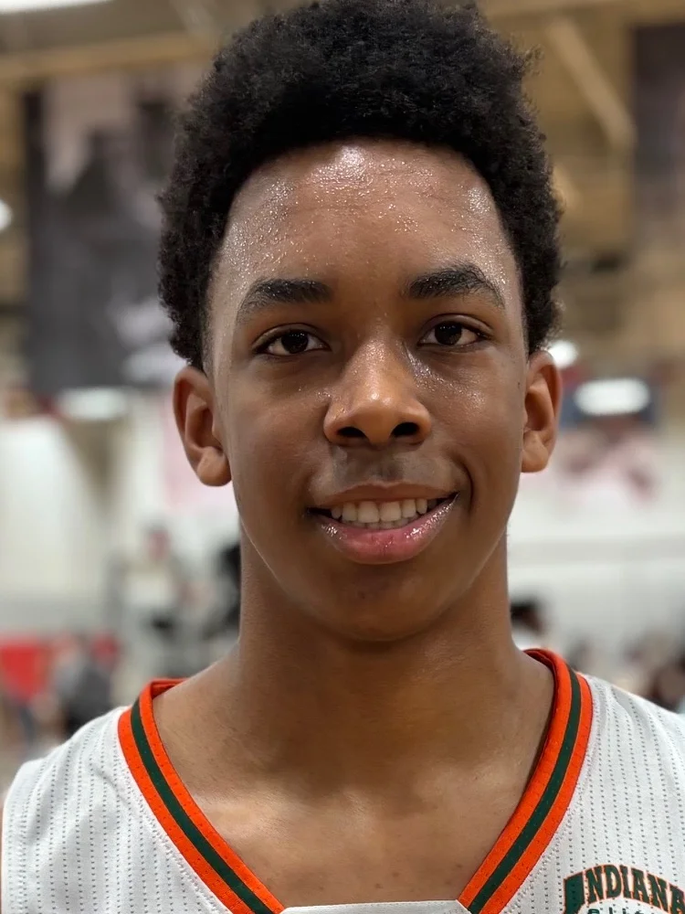

2027 NBA Draft · Preseason Report · Jul 5, 2026
Anthony Thompson
Preseason scouting notes ahead of Ohio State's 2026-27 season.

Draft Projection
NBA Role Projection
Stats
No college minutes logged yet — this section fills in once the season tips off.
Info
School: Ohio State | Class: FR | Position: SF/PF | Height: 6'8" | Weight: 215 | Wingspan: 7'3"
Physical
He has good positional size at 6'9" with impressive length, but his athletic profile is below average. He grades around a 4/10 in quickness, vertical explosiveness, and lateral agility. While he has the frame to add more muscle, he currently looks physically underdeveloped and raw.
Offense
His biggest offensive selling point is his shooting potential. He has a high release and clean mechanics that suggest he can develop into a reliable floor spacer, even though the production has been inefficient and on low volume so far.
The concerns outweigh the positives at this stage. He is a below-the-rim athlete for his size, lacks self-creation, and has very little offensive versatility beyond spot-up shooting. He struggles to establish position against smaller defenders, doesn't show much touch around the basket, and has yet to demonstrate a reliable interior scoring package.
Defense
There are few positive indicators on the defensive end at this point. Despite his length, he has not shown consistent impact as a rim protector or versatile defender. His rebounding numbers are underwhelming for a player his size, and his overall effort level and defensive engagement raise concerns.
Outlook
The biggest question surrounding his projection is his mentality and competitiveness. His body language and defensive effort have been inconsistent, and he currently appears most comfortable as a catch-and-shoot forward or stretch big without offering much else. Improving his motor, physicality, and overall engagement will be essential if he is going to earn a long-term NBA role.